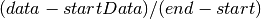
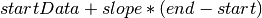

Network Profile¶
-
class
networkProfile.ProfileEntry(start=0, end=0, slope=0, data=0, kind='none')¶ Profile Entry contains the information about a single entry in a network profile.
Parameters: - start (double) – start time of the entry
- end (double) – end time for the entry
- slope (double) – what is the slope of the entry
- data (double) – what is the end data for the entry
- kind (string) – what kind of entry is it?
-
start= None¶ The start time of the entry
-
end= None¶ The end time of the entry
-
slope= None¶ The slope of this entry
-
data= None¶ The cumulative amount of data sent by the end of this entry (including previous entries)
-
kind= None¶ The kind of the entry, e.g. ‘required’
-
UpdateSlope(startData)¶ Recalculate the slope as 
-
UpdateData(startData)¶ Recalculate the end data as 
-
FromLine(line)¶ Set entry attributes from a single line string. This line should be a csv list of one of these forms:
<start time (s)>, <bandwidth (bps)>, <latency (s)> <start time (s)>, <mean bandwidth (bps)>, <max bandwidth (bps)>, <latency (s)>
Parameters: line (string) – single csv line following the proper format
-
GetDataAtTime(t)¶ Returns the data at time t, based on the slope and the end data. :param double t: Time in the profile at which to query the data
-
GetTimesAtData(d)¶ Returns a list of all possible times the entry has the data value d. :param double d: Data value for which you want to find all matching times
-
class
networkProfile.Profile(kind=None, period=0, source=0, dest=0)¶ Profile contains the information about a single network profie. A network profile has a kind (e.g. ‘provided’), a period (in seconds), and a list of entries of type
ProfileEntry.Parameters: - kind (string) – what kind of profile is it?
- period (double) – what is the periodicity (in seconds) of the profile
- source (int) – what is the node id from which the data on this profile will be sent
- dest (int) – what is the node id to which the data on this profile will be sent
-
ParseHeader(header)¶ - Parses information from the profile’s header if it exists:
- period
- source node ID
- destination node ID
- profile kind
A profile header is at the top of the file and has the following syntax:
# <property> = <value>
-
BuildProfile(prof_str=None, prof_fName=None, num_periods=1)¶ Builds the entries from either a string (line list of csv’s formatted as per
ProfileEntry.FromLine()) or from a CSV file. The profile can be made to repeat for some number of periods.
-
RepeatProfile(num_periods)¶ Copy the current profile entries over some number of periods.
-
Kind(kind)¶ Set the kind of the profile and all its entries.
-
Integrate()¶ Integrate all the entries’ slopes cumulatively to calculate their new data.
-
Derive()¶ Derive all the entries slopes from their data.
-
AddProfile(profile)¶ Compose this profile with an input profile by adding their slopes together.
-
SubtractProfile(profile)¶ Compose this profile with an input profile by subtracting the input profile’s slopes.
-
SubtractEntry(entry, integrate=True)¶ Subtract a single entry (based on its bandwidth) from the profile. This entry may come from anywhere, so we must take care to ensure that any possibly affected entries are properly updated.
-
AddEntry(entry, integrate=True)¶ Add a single entry (based on its bandwidth) to the profile. This entry may come from anywhere so we must take care to ensure that any possibly affected entries are properly updated.
-
ConvertToNC(step, filterFunc)¶ Perform time-window based integration to generate a Network Calculus curve from the profile. The conversion is configurable based on time-window step-size and a filter function (e.g. min or max). Passing
max()will create an arrival curve, while passingmin()will create a service curve.
-
MakeGraphPointsData()¶ Turn the entries’ data points into plottable x,y series.
-
MakeGraphPointsSlope()¶ Turn the entries’ slopes into plottable x,y series.
-
Convolve(provided)¶ Use min-plus calculus to convolve this required profile with an input provided profile.